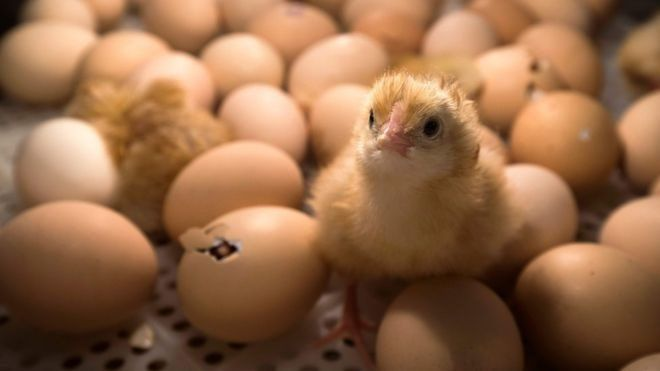
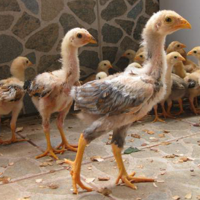

A umidade para chocar ovo de galinha deve variar entre 28,3 ºC e 31,1 ºC, mantendo o mesmo nível até três dias antes da eclosão. Em incubadoras de ovos mais simples, a umidade é garantida por meio da evaporação da água armazenada em pequenos recipientes sem tampa.16 de mar. de 2022
Encontre um distribuidor de ovos fertilizados. Os ovos fertilizados devem ser obtidos de granjas ou aviários com galos, caso não crie suas próprias galinhas. Você pode conseguir ovos frescos de fazendas que vendem suas sobras. Cheque os fornecedores em potencial antecipadamente para garantir que eles tenham a raça correta e a quantidade de ovos de que você precisa em estoque. Peça a um especialista na área para indicar uma boa fonte a você.[2] Os ovos que encontra em mercados geralmente não são fertilizados e não podem ser chocados. Para prevenir doenças e por razões de saúde, é melhor adquirir todos os ovos de uma fonte só. Caso procure por uma raça em particular de galinha, ou uma que seja rara, você pode ter que contatar uma granja especializada.

